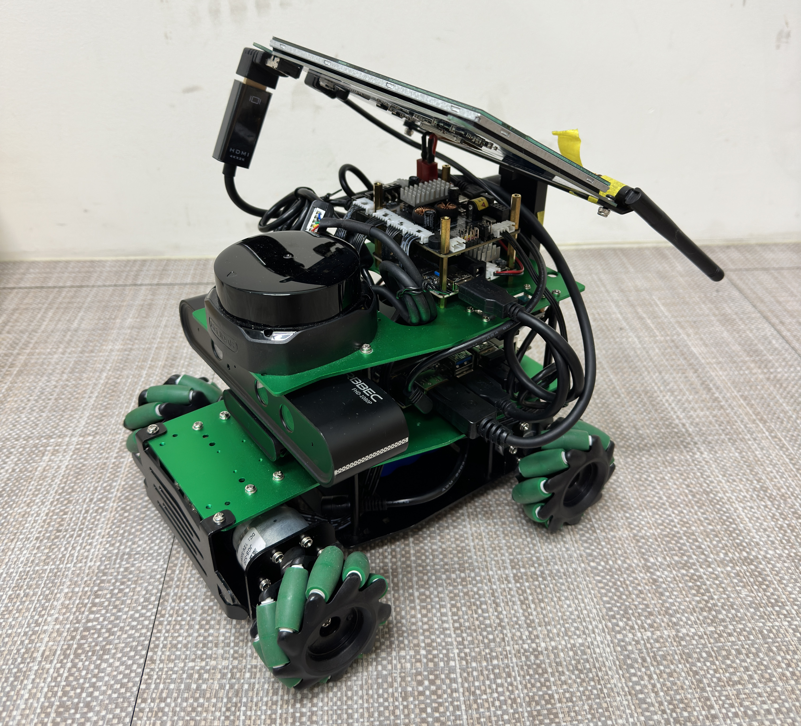
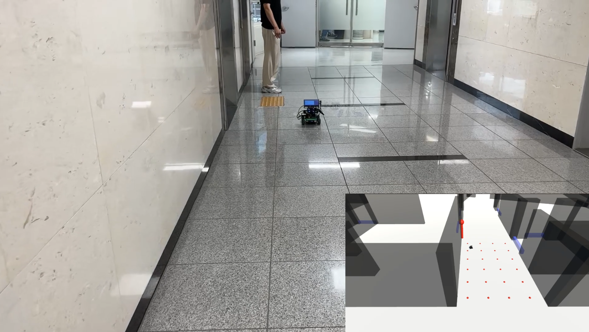
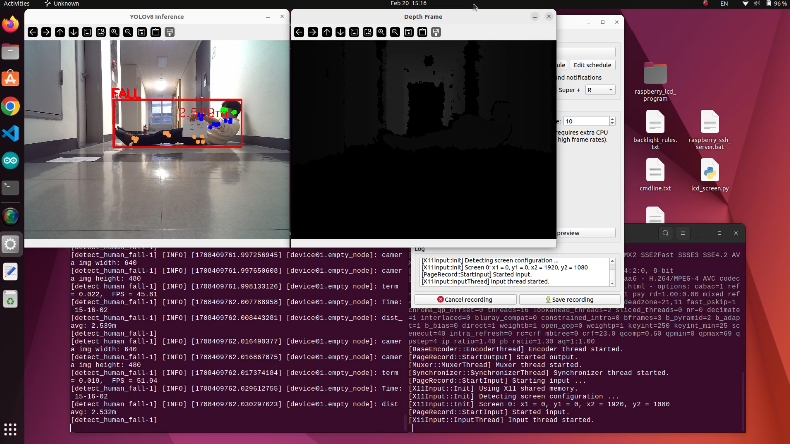
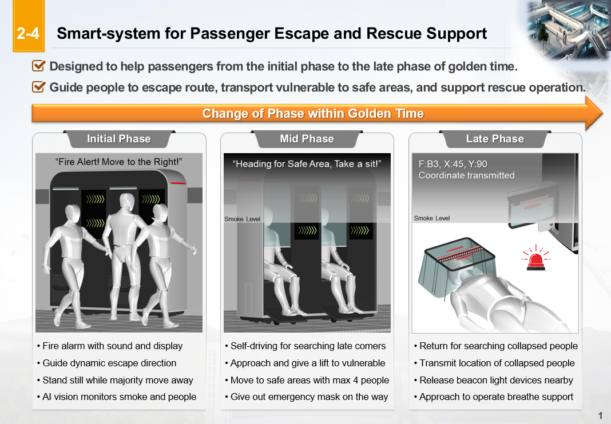
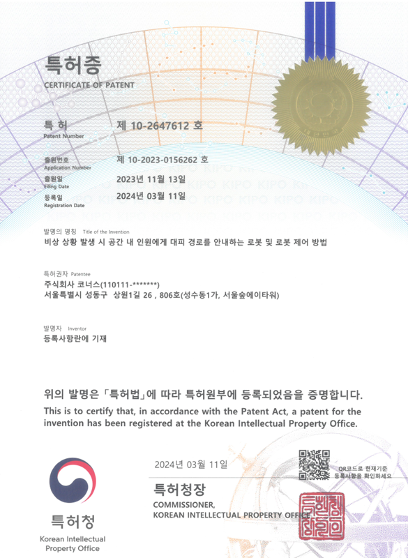
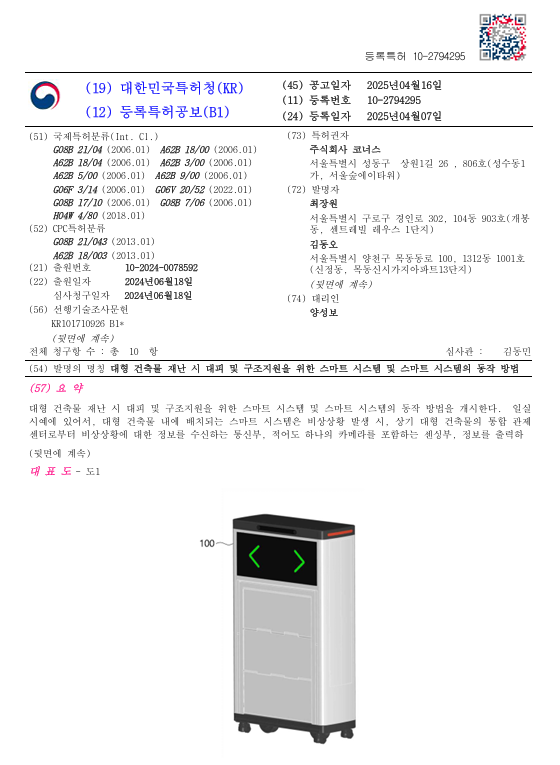

Development of Smart Rescue System for Great Deep Railway Facilities


This project is a part of South Korean government-funded R&D initative aimed at developing and demonstrating disaster awareness, prediction, and response technologies to ensure rapid evacuation and user safety in deep underground facilities - such as GTX complex stations and long tunnels under high-risk emergency scenarios including fire, earthquakes, and flooding.
Team Collaboration


This image shows a real-world localization and synchronization test conducted in a company corridor. In collaboration with a Unity engineer, the corridor environment was reconstructed as a 3D model in Unity and synchronized with a physical mobile robot in real time.
The robot first performed LiDAR SLAM-based mapping to generate a spatial map of the corridor, which was then integtated into Unity to create a corresponding 3D environment. Using localization data, the real robot and its virtual counterpart in Unity wer accurately synchronized.
In addition, a human pose detection algorithm running on the robot was used to detect nearby people. When a person was detected, their position was accurately estimated and visualized in real time within the Unity 3D environment, enabling precise human-robot spatial awareness.
International Seminar Presentation

Patent


For more detailed information, you can view the full patent report: